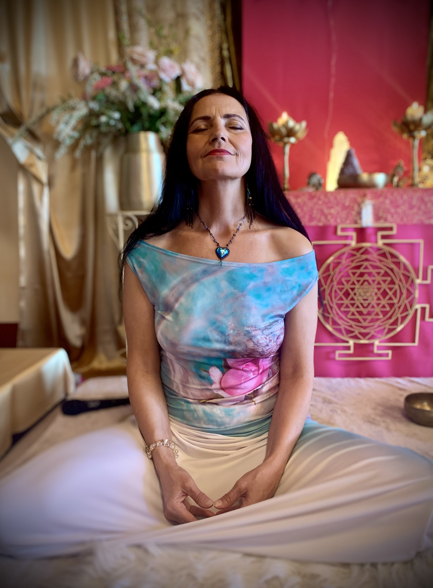
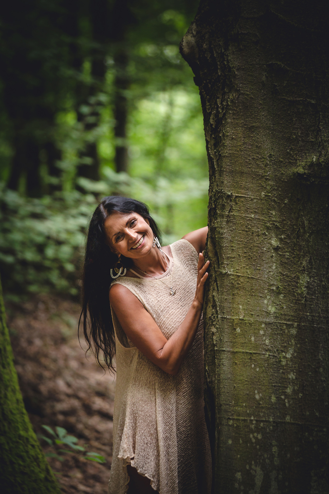
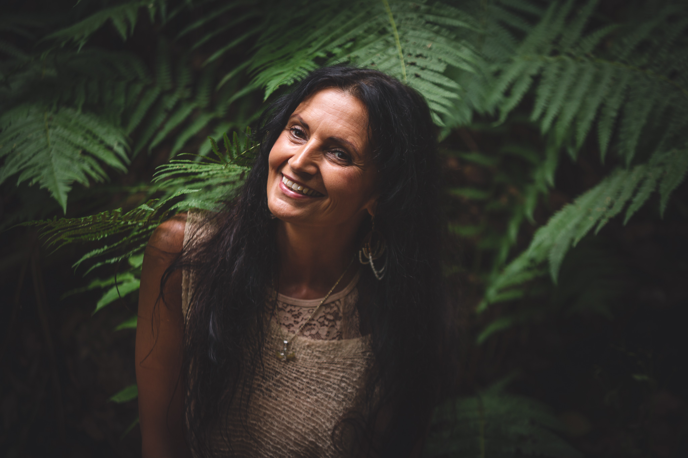
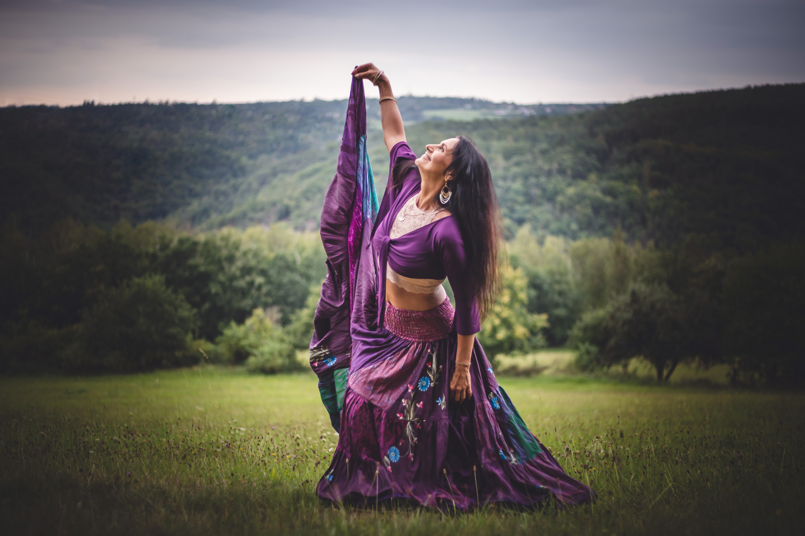
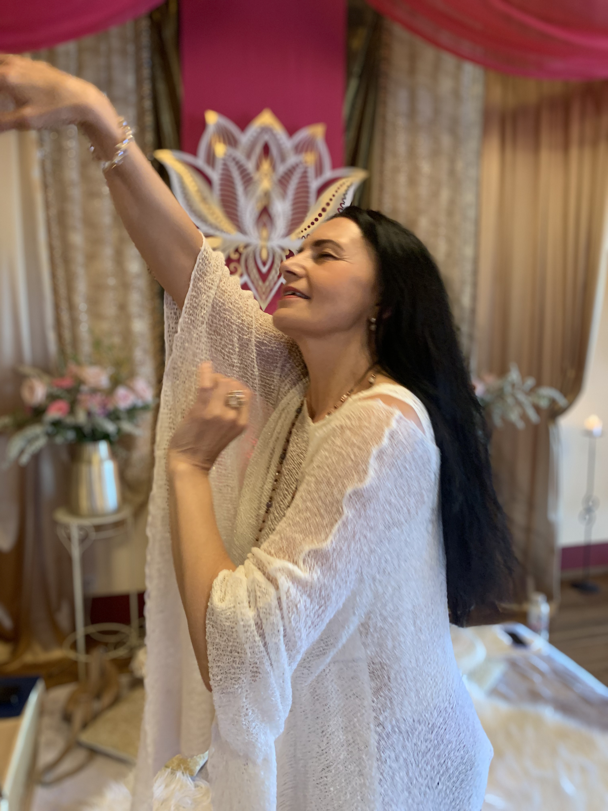
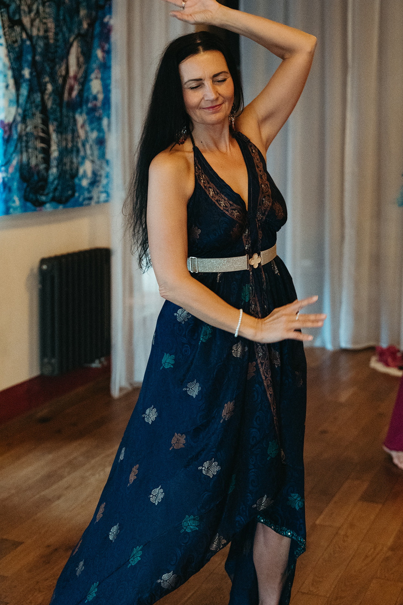

Krása jako součást života
Již mnoho let studuji duchovní tradice, Tantru, jógu, meditaci, vědomou práci s tělem a umění vědomých vztahů. Inspiraci jsem čerpala na cestách po Indii, Havaji, Bali i v Latinské Americe od učitelů, kteří mě vedli k hlubšímu poznání lidské duše, srdce a Ducha.
Více než sedmnáct let jsem se současně věnovala floristickému umění, kde jsem skrze krásu, harmonii a estetiku rozvíjela cit pro jemnost, tvořivost a vnímání života v jeho plnosti. Dnes propojuji tyto dary ve své práci s ženami.
Provázím ženy na cestě k jejich autentické ženskosti, vnitřní síle, moudrosti těla a posvátné intimitě v otevřeném srdci. Věřím, že když se žena spojí se svou božskou podstatou, přirozeně probouzí svou zářivost, magnetismus a schopnost tvořit vědomé a naplňující vztahy.




Hledání, které začalo už v dětství
Mé rozpomínání na to, kdo ve skutečnosti jsem, započalo už v raném dětství. Místo panenek jsem v kočárku vozila koťata a štěňata. Nikdy mě cesta nevedla k dětem, ale ke zvířatům a přírodě.
Už jako malá jsem cítila, že svět je hlubší, než jak nám byl představován. Ve dvanácti letech jsem prožila vnitřní poznání, že jsem nesmrtelná bytost a že jsem tady proto, abych hledala pravdu o duši.
Volání po hlubším poznání mě postupně přivedlo k józe, šamanskému učení i prvním cestám za poznáním. Každá zkušenost mě vedla hlouběji k sobě samé a postupně odhalovala směr mého života.

Cesty, které formovaly mé poslání
Přestože jsem vystudovala floristiku a více než sedmnáct let budovala síť květinářství, mé hledání pokračovalo dál. Krása pro mě nikdy nebyla jen estetikou. Stala se cestou k hlubšímu vnímání života, harmonie a Božského řádu.
Cesty do Indie, na Havaj, Bali i do Latinské Ameriky se staly důležitými zastaveními mé životní cesty. Právě tam jsem prohlubovala své poznání Tantry, meditace, chrámového tance, vědomé práce s tělem i posvátného Erótu.


„Duchovní život nelze oddělit od každodennosti. Je přítomen v našem dechu, vztazích, těle, tvoření i způsobu, jakým milujeme."— Anjali

Když život přinesl jinou cestu
Celý život jsem hledala odpověď na otázku, proč nejsem biologickou matkou. V době dospívání mě provázely gynekologické potíže a postupně jsem přijala skutečnost, že děti pravděpodobně nikdy mít nebudu.
Odpověď přišla až během mé cesty do Ekvádoru. Právě tam jsem hluboce pochopila, že každá žena přináší život jiným způsobem. Některé rodí děti. Jiné rodí projekty, krásu, světlo nebo prostor, který podporuje druhé na jejich cestě.
Tehdy jsem s úlevou opustila představu, že mateřství má jen jednu podobu. Přijala jsem svou vlastní cestu a pochopila, že i ona je úplná.
Zkouška, která otevřela mé srdce
Do života jsem dostala milujícího muže, který byl mým partnerem, přítelem i učitelem. Společně jsme sdíleli touhu hledat pravdu a žít duchovní rozměr života.
Po sedmnácti letech se můj život během jediného okamžiku proměnil. Můj muž čekal dítě se ženou, které jsem hluboce důvěřovala. Když se dnes ohlížím zpět, byl to neuvěřitelný šok z dvojnásobné zrady. Měla jsem pocit, že mě opustil Bůh.
Přes obrovskou bolest jsem svého muže stále milovala a přála mu dítě, které jsem mu sama dát nemohla. Byla jsem u porodu jeho syna. Byl to nejsilnější prožitek mého života. V jediném okamžiku jsem prožívala zázrak zrození, hlubokou lásku i nesmírné utrpení.
Právě tato životní zkouška mě přivedla k hlubšímu sebepoznání. Postupně jsem pochopila, že některé vztahy nejsou určeny k tomu, aby trvaly navždy. Jsou tu proto, aby nás probudily, otevřely naše srdce a přivedly nás blíž k pravdě o nás samotných.

„To, co jsem kdysi považovala za konec svého života, se nakonec stalo návratem k sobě samé."— Anjali

To, co se rozpadlo, mě přivedlo blíž k sobě
Dnes už vím, že krása mého příběhu nespočívá v jeho dokonalosti, ale v jeho pravdivosti.
Když se ohlížím zpět, vidím, že to nejcennější, co mi všechny životní zkoušky přinesly, nebyla bolest ani zrada, ale cesta ženy, která se navzdory všemu neuzavřela. Cesta ženy, která se skrze své zkušenosti učila milovat hlouběji, poznávat sama sebe a nacházet v životě vyšší smysl.
Pochopila jsem, že ne všechno, co se v našem životě rozpadne, je ztrátou. Někdy se pod troskami starých příběhů rodí naše pravé já.
Také jsem poznala, že některé ženy rodí děti a jiné rodí světlo, krásu, projekty, lásku a prostor, který se dotýká mnoha životů. Ani jedna cesta není větší nebo menší. Každá je jedinečná a posvátná.
Dnes kráčím životem s pokorou a vděčností za vše, čím jsem prošla. Každá zkouška mě vedla blíž k lásce, pravdě a sobě samé. S otevřeným srdcem toto poznání předávám dál ženám, které touží objevit svou vlastní cestu.
Láska je Bůh. Bůh je láska. A láska je žena.
Pokračuj se mnou


Osobní web
Můj osobní web propojuje vše, čemu se věnuji. Najdeš tady semináře, individuální provázení, služby i další možnosti, jak pokračovat na své cestě.
Navštívit osobní web
Rozhovory
V rozhovorech sdílím svůj pohled na ženství, vztahy, spiritualitu i témata, která jsou součástí Mysterijní školy ženství.
Zhlédnout rozhovory